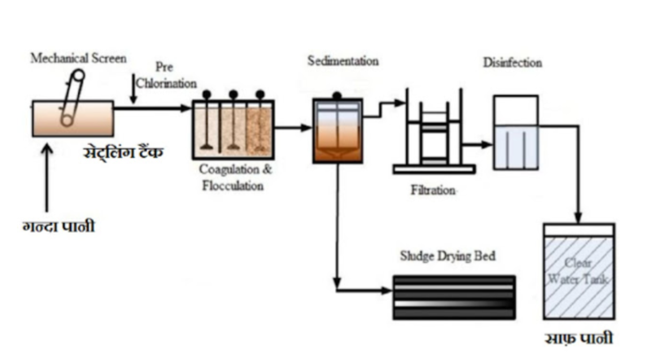
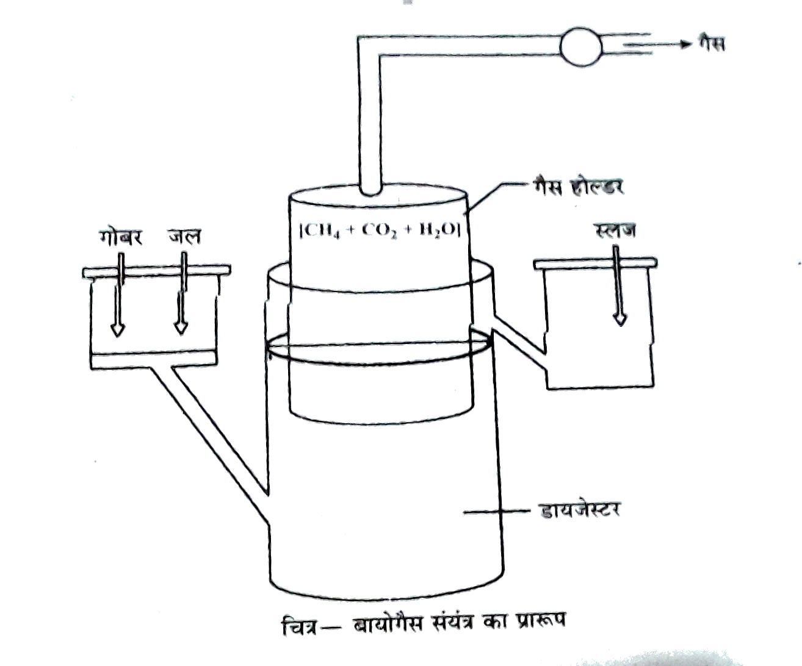

प्रश्न: सूक्ष्म जीव विज्ञान (सूक्ष्मजैविकी) किसे कहते हैं? (प्रश्न बैंक)
उत्तर:
सूक्ष्म जीव विज्ञान, जीव विज्ञान की वह शाखा है जिसके अन्तर्गत सूक्ष्मदर्शी से दिखाई देने वाले सूक्ष्मजीवों का अध्ययन किया जाता है।
प्रश्न: सूक्ष्मजीव किसे कहते हैं?
उत्तर:
ऐसे जीव जिनको केवल सूक्ष्मदर्शी की मदद से ही देखा जा सके, उन्हे सूक्ष्मजीव कहते हैं।
उदाहरण: जीवाणु, कवक, प्रोटोजोअन आदि।
प्रश्न: सूक्ष्मजैविकी (माइक्रोबायोलॉजी) की व्यावसायिक उपयोगिता बताइए।
उत्तर:
सूक्ष्मजीवों का प्रयोग हमारे कई व्यवसायों में होता है। ऐसे व्यवसाय जिनमें सूक्ष्मजीवों या सूक्ष्मजैविकी का प्रयोग किया जाता है वे निम्नलिखित हैं—
सूक्ष्मजीवों के कारण ही दही, पनीर, डोसा, ढोकला, इडली, ब्रेड आदि का निर्माण हो पाता है। इसलिए घरेलू उत्पादों में सूक्ष्मजैविकी बहुत महत्त्वपूर्ण है।
किण्वित एल्कोहॉलिक पेयों, जैसे वाइन, बियर, व्हिस्की, ब्राण्डी आदि में सूक्ष्मजैविकी का प्रयोग किया जाता है।
प्रतिजैविक या एन्टीबायोटिक उत्पादन में भी इनका प्रयोग होता है।
कई प्रकार के एन्जाइम तथा सक्रिय अणु (साइक्लोस्पोरिन, स्ट्रेप्टोकाइनेज) में प्रयोग।
प्रश्न: सूक्ष्मजीवों से कौन-कौन से घरेलू उत्पाद प्राप्त किये जाते हैं?
उत्तर:
सूक्ष्मजीवों से निम्न घरेलू उत्पाद प्राप्त किये जाते हैं—
दही
डोसा और इडली
ब्रेड या पावरोटी
पनीर
ताड़ी
प्रश्न: दही किस प्रकार प्राप्त किया जाता है?
उत्तर:
लैक्टोबैसिलस जीवाणु जैसे लैक्टिक एसिड बैक्टीरिया (LAB) का प्रयोग दूध से दही बनाने के लिए किया जाता है। हल्के गरम दूध में थोड़ा सा लैक्टिक अम्ल जीवाणु निवेश द्रव्य के रूप मे डाला जाता है, जो दूध को 30-40°C पर धीरे-धीरे दही मे बदल देता है। निवेश द्रव्य मे लाखों LAB होते हैं।
दही में विटामिन B12 पाया जाता है।
LAB शरीर मे पाये जाने वाले हानिकारक जीवाणुओं को नष्ट कर देता है।
प्रश्न: LAB का पूरा नाम लिखिए।
उत्तर:
LAB का पूरा नाम लैक्टिक एसिड बैक्टीरिया है।
प्रश्न: लैक्टिक एसिड बैक्टीरिया आपको किस खाद्य पदार्थ में मिलेंगे? उनके कुछ उपयोगी अनुप्रयोगों का उल्लेख कीजिए।
उत्तर:
दही में बहुत अधिक संख्या में लैक्टिक एसिड बैक्टीरिया (LAB) होते हैं।
LAB के अनुप्रयोग:
LAB द्वारा उत्पादित लैक्टिक अम्ल दूध प्रोटीन को जमा देता है जिससे दूध दही में बदल जाता है और दूध प्रोटीन आसानी से पचने योग्य हो जाता है।
LAB विटामिन B12 का संश्लेषण करता है, जिससे दही का पोषण मूल्य बढ़ जाता है।
LAB मानव पेट में रोगजनक बैक्टीरिया के विकास को रोकता है, जिससे बीमारियों से बचाव होता है।
प्रश्न: जीवाणुओं को नंगी आँखों से नहीं देखा जा सकता, लेकिन इन्हें सूक्ष्मदर्शी की मदद से देखा जा सकता है। यदि आपको सूक्ष्मदर्शी की सहायता से सूक्ष्मजीवों की उपस्थिति प्रदर्शित करने के लिए अपने घर से अपनी जीव विज्ञान प्रयोगशाला में एक नमूना ले जाना हो, तो आप कौन सा नमूना ले जाएँगे और क्यों? (एनसीईआरटी)
उत्तर:
दही को साफ़ और ढके हुए बर्तन में प्रयोगशाला में आसानी से ले जाया जा सकता है। ग्राम स्टेन से रंगने के बाद दही की स्लाइड में बैक्टीरिया देखे जा सकते हैं। दही में यीस्ट कोशिकाएँ भी आसानी से देखी जा सकती हैं। सूक्ष्मजीवों का निरीक्षण करने के लिए दही सबसे उपयुक्त विकल्प है क्योंकि यह सौ प्रतिशत सुरक्षित है। इसमें कोई हानिकारक या रोगजनक बैक्टीरिया नहीं होते। दही आसानी से उपलब्ध है, क्योंकि इसका उपयोग लगभग सभी घरों में भोजन के रूप में किया जाता है। इसके अलावा, इसका उत्पादन घर पर आसानी से किया जा सकता है।
प्रश्न: डोसा और इडली किस प्रकार प्राप्त किया जाता है?
उत्तर:
इसमे दाल व चावल के आटे को बैक्टीरिया द्वारा किण्वित किया जाता है, जिससे आटे मे से CO₂ निकलने लगती है। इससे आटा ढीला व मुलायम हो जाता है, क्योंकि किण्वन एक प्रकार का अवायवीय श्वसन है जिसमे शर्करा का अपूर्ण ऑक्सीकरण होता है और CO₂ उप-उत्पाद के रूप में निकलती है। इसके लिए स्ट्रेप्टोकोकस फीकेलिस जीवाणुओं का उपयोग किया जाता है।
वर्तमान मे बैक्टीरिया के स्थान पर ENO का उपयोग भी किया जाता है। यह भी आटे मे मिलाने पर CO₂ उत्पन्न कर किण्वन उत्पन्न कर देता है और आटे को कोमल व ढीला कर देता है।
प्रश्न: ब्रेड या पावरोटी किस प्रकार प्राप्त किया जाता है?
उत्तर:
ब्रेड निर्मित करने के लिए गेहूँ के आटे मे सैकरोमाइसीज सैरीवीसी नामक कवक डाला जाता है, फिर कुछ समय के लिए गुंदे हुए आटे को छोड़ देते हैं जिससे इसमे अवायुवीय श्वसन होने लगता है और उसमे खमीर उत्पन्न होने लगता है, क्योंकि यीस्ट (कवक) आटे मे एमाइलेज, माल्टेज या जाइमेज एन्जाइम उत्पन्न करता है। एमाइलेज एन्जाइम शर्करा को माल्टोज मे, माल्टोज को ग्लूकोज में बदल देता है, इससे आटा और ब्रेड स्पंजी हो जाता है।
प्रश्न: पनीर किस प्रकार प्राप्त किया जाता है?
उत्तर:
सूक्ष्मजीवों की मदद से दूध को फाड़कर पनीर का निर्माण किया जाता है। पनीर की सैकड़ों किस्में पाई जाती हैं। विभिन्न प्रकार के पनीर बनाने के लिए भिन्न-भिन्न प्रकार के सूक्ष्मजीवों का प्रयोग किया जाता है। सभी प्रकार के पनीर का स्वाद व खुशबू अलग-अलग होता है।
प्रश्न: विभिन्न प्रकार के पनीर के नाम, उनका स्वाद व खुशबू लिखिए।
उत्तर:
क्रमांक
पनीर का नाम
प्रकार
सूक्ष्मजीव का नाम
सूक्ष्मजीव का प्रकार
1.
स्विस पनीर
कठोर
प्रोपिओनिबैक्टीरियम शारमैनाई
जीवाणु
2.
राक्यूफोर्ट पनीर
अर्धठोस
पेनिसिलियम राक्यूफोर्टि
कवक
3.
कैम्म्बर्ट पनीर
मुलायम
पेनिसिलियम कैम्म्बर्टी
कवक
प्रश्न: स्विस पनीर में पाए जाने वाले बड़े-बड़े छिद्र किस कारण से बनते हैं? (प्रश्न बैंक)
अथवा
स्विस पनीर में बड़े छिद्र क्यों होते हैं? (2024)
उत्तर:
स्विस पनीर को बनाने में प्रयुक्त जीवाणु प्रोपिओनीबैक्टीरियम शारमैनाई बड़ी मात्रा में CO₂ गैस बनाता है, जो पनीर में यहाँ-वहाँ फँसकर बड़े छिद्र बना देती है।
प्रश्न: डबल रोटी, दही, पनीर एवं बायोगैस के निर्माण में प्रयुक्त सूक्ष्मजीवों के नाम लिखिये। (2024 पूरक)
उत्तर:
डबल रोटी — सैकरोमाइसीज सैरेवीसी।
दही — लैक्टोबैसीलस।
पनीर — प्रोपिओनिबैक्टीरियम शारमैनाई।
बायोगैस — मीथेनोबैक्टीरियम।
प्रश्न: किन्हीं दो सूक्ष्मजीवों के नाम लिखिए जिनका उपयोग पनीर उत्पादन में किया जाता है।
उत्तर:
पनीर उत्पादन में प्रयुक्त दो सूक्ष्मजीवों के नाम निम्न हैं—
लैक्टोबैसिलस
प्रोपिओनिबैक्टीरियम शारमैनाई
प्रश्न: ताड़ी किस प्रकार प्राप्त किया जाता है?
उत्तर:
यह एक दक्षिण भारतीय प्राचीन व पारम्परिक पेय पदार्थ है। इसके लिए ताड़ के वृक्ष के तने मे चीरा लगाकर उससे एक तरल प्राप्त किया जाता है। इस तरल को सूक्ष्मजीवों की सहायता से किण्वित किया जाता है, जिससे ताड़ी प्राप्त होती है।
प्रश्न: किण्वन किसे कहते हैं?
उत्तर:
वह जैव-रासायनिक प्रक्रिया है जिसमें सूक्ष्मजीव जैसे — यीस्ट (खमीर) या जीवाणु शर्करा को ऑक्सीजन की अनुपस्थिति में तोड़कर अल्कोहल, अम्ल या गैसें बनाते हैं, किण्वन कहलाता है।
उदाहरण: ग्लूकोज़ का एथिल अल्कोहल और कार्बन डाइऑक्साइड में परिवर्तन —
प्रश्न: निम्नलिखित पदार्थों से प्राप्त पेय के नाम लिखिए।
उत्तर:
विभिन्न पदार्थों से प्राप्त पेय के नाम निम्न हैं—
जौ का रस → बीयर
फलों का रस → ब्रान्डी
अनाज का रस → व्हिस्की
सेब का रस → वोडका
प्रश्न: प्रतिजैविक पदार्थ (एंटीबायोटिक्स) किसे कहते हैं?
उत्तर:
प्रतिजैविक ऐसे रासायनिक यौगिक होते हैं जिन्हें सूक्ष्मजीवों से प्राप्त किया जाता है तथा इनका उपयोग सूक्ष्मजीवों की वृद्धि को रोकने अथवा उनको नष्ट करने के लिए किया जाता है।
प्रतिजैविक शब्द का सर्वप्रथम प्रयोग वाक्समैन ने 1942 में किया था।
उपयोग: काली खाँसी, प्लेग, कुष्ठ रोग और डिप्थीरिया आदि रोग मे प्रतिजैविक का उपयोग किया जाता है।
प्रश्न: जीवाणुओं में प्रतिजैविक प्रतिरोध किस प्रकार उत्पन्न होता है?
उत्तर:
प्रतिजैविकों का उपयोग सामान्यतः जीवाणुओं एवं कवकों से सम्बन्धित बीमारियों के इलाज हेतु किया जाता है। इलाज के समय इनकी आवश्यक खुराक, उपयोग विधि, उपयोग अवधि रोगी एवं रोग की प्रचण्डता के अनुसार भिन्न-भिन्न होती है। लम्बी अवधि तक किसी प्रतिजैविक का उपयोग करने से उस रोग से सम्बन्धित जीवाणुओं में औषधि प्रतिरोध उत्पन्न हो जाता है। क्षय रोग इसका सर्वोत्तम उदाहरण है।
प्रश्न: प्रतिजैविक के तीन लक्षण लिखिए। (2022)
उत्तर:
प्रतिजैविक के प्रमुख लक्षण निम्न हैं—
यह आहारनाल में उपस्थित सूक्ष्मजीवों को हानि नहीं पहुँचाते हैं।
यह मेजबान (होस्ट) पर हानिकारक प्रभाव न डाले।
यह त्वरित क्रिया एवं विस्तृत स्पेक्ट्रम वाला होना चाहिए।
प्रश्न: प्रथम प्रतिजैविक का नाम लिखिए। इसकी खोज किसने की थी?
उत्तर:
प्रथम प्रतिजैविक औषधि पेनिसिलिन है। इसकी खोज एलेक्जेन्डर फ्लेमिंग ने 1928 ई. मे की थी।
इस प्रतिजैविक का द्वितीय विश्व युद्ध (1939-1944) के दौरान व्यापक रूप से उपयोग हुआ।
प्रश्न: पेनिसिलीन का निर्माण किस कवक द्वारा किया जाता है?
उत्तर:
पेनिसिलीन का निर्माण पेनिसिलियम क्राइसोजीनम और पेनिसिलियम नोटेटम कवकों से होता है।
प्रश्न: दो प्रतिजैविकों के नाम लिखिए।
उत्तर:
दो प्रतिजैविकों के नाम निम्न हैं—
पेनीसिलीन
टेट्रासाइक्लीन
प्रश्न: कवक की उस प्रजाति का नाम बताइए जिसका उपयोग एंटीबायोटिक दवाओं के उत्पादन में किया जाता है। इसकी खोज किसने की थी? (2025)
उत्तर:
पेनिसिलियम नोटेटम या पी. क्राइसोजेनम नामक कवक का उपयोग एंटीबायोटिक पेनिसिलिन के उत्पादन में किया जाता है। इसकी खोज अलेक्जेंडर फ्लेमिंग (1928) ने की थी।
प्रश्न: कवक की दो प्रजातियों के नाम बताइए, जिनका उपयोग एंटीबायोटिक दवाओं के उत्पादन में किया जाता है।
उत्तर:
पेनिसिलियम क्राइसोजेनम का उपयोग पेनिसिलिन के उत्पादन में किया जाता है।
पेनिसिलियम ग्रिसोफुल्वम का उपयोग ग्रिसोफुल्विन के उत्पादन में किया जाता है।
प्रश्न: हानिकारक जीवाणुओं द्वारा उत्पन्न रोगों के नियंत्रण में सूक्ष्मजीवों की क्या भूमिका है?
उत्तर:
हानिकारक जीवाणुओं द्वारा उत्पन्न रोगों के नियंत्रण में सूक्ष्मजीवों की निम्न भूमिका है—
बैक्टीरिया, एक्टिनोमाइसीट्स और कवक द्वारा उत्पादित एंटीबायोटिक्स का उपयोग जीवाणुजनित रोगों के उपचार में किया जाता है।
लैक्टिक एसिड बैक्टीरिया हमारे पेट में प्रवेश करने वाले कई रोगजनक बैक्टीरिया से हमारी रक्षा करते हैं। ऐसे मित्रवत बैक्टीरिया हमारी त्वचा पर भी पाए जाते हैं।
प्रश्न: जैव सक्रिय अणु किन्हें कहा जाता है? उदाहरण सहित बताइए।
उत्तर:
सूक्ष्मजीवों द्वारा उत्पन्न ऐसे अणु जो शरीर की कार्यिकी को प्रभावित करते हैं तथा मानव कल्याण के उद्देश्य से उपयोग किए जाते हैं, जैव सक्रिय अणु कहलाते हैं।
उदाहरण: साइक्लोस्पोरिन-A तथा स्टेटिन।
प्रश्न: रसायन, एंजाइम तथा अन्य जैवसक्रिय अणु में सूक्ष्मजीवों का उपयोग लिखिए।
उत्तर:
कुछ विशेष प्रकार के रसायनों; जैसे कार्बनिक अम्ल, एल्कोहल तथा एंजाइम आदि के व्यावसायिक तथा औद्योगिक उत्पादन में सूक्ष्मजीवों का बड़े पैमाने पर उपयोग किया जाता है।
रसायन में सूक्ष्मजीवों के उपयोग:
ऐस्परजिलस नाइगर (कवक) द्वारा सिट्रिक अम्ल प्राप्त होता है।
एसीबैक्टर एसिटाई (जीवाणु) द्वारा ब्युटिरिक अम्ल प्राप्त होता है।
लैक्टोबैसिलस द्वारा लैक्टिक अम्ल प्राप्त होता है।
यीस्ट (सैकरोमाइसीज सैरीवेंसी) के प्रयोग से एथानॉल का बड़े पैमाने पर उत्पादन किया जाता है।
एंजाइम में सूक्ष्मजीवों के उपयोग:
लाइपेज का प्रयोग अपमार्जक संरूपण तथा धुलाई मे कपड़ों से तेल के धब्बे हटाने में किया जाता है।
पैक्टीनेज तथा प्रोटीएज के प्रयोग के कारण बोतल वाला रस अधिक स्वच्छ एवं साफ होता है।
जैव सक्रिय अणु में सूक्ष्मजीवों के उपयोग:
साइक्लोस्पोरिन-A जैव सक्रिय अणु है, जिसका प्रयोग अंग प्रतिरोपण में प्रतिरक्षा निरोधक कारक के रूप मे रोगियों मे किया जाता है। इसका उत्पादन ट्राइकोडर्मा पॉलिस्पोरम नामक कवक से किया जाता है।
मोनैस्कस परप्यूरियस यीस्ट से उत्पन्न स्टैटिन का व्यापारिक स्तर पर प्रयोग रक्त कोलेस्ट्रॉल को कम करने वाले कारक के रूप में किया जाता है।
प्रश्न: उन सूक्ष्मजीवों के नाम लिखिए जिनसे साइक्लोस्पोरिन-A तथा स्टैटिन्स को प्राप्त किया जाता है।
उत्तर:
ट्राइकोडर्मा पॉलिस्पोरम और मोनैस्कस परप्यूरियस।
प्रश्न: स्ट्रेप्टोकोकस, मोनास्कस और ट्राइकोडर्मा द्वारा उत्पादित जैवसक्रिय पदार्थों के नाम बताइए। साथ ही, उनकी औषधीय भूमिका भी बताइए।
उत्तर:
सूक्ष्मजीव
जैव सक्रिय पदार्थ (औषधि)
औषधीय भूमिका (Medicinal Role)
स्ट्रेप्टोकोकस (आनुवंशिक रूप से परिवर्तित)
स्ट्रेप्टोकिनेज़
रक्त वाहिकाओं में बने थक्के को घोलता है, इसलिए इसे क्लॉट बस्टर कहा जाता है। हृदयाघात तथा स्ट्रोक के रोगियों के लिए उपयोगी।
मोनास्कस
स्टैटिन
रक्त में कोलेस्ट्रॉल का स्तर कम करता है (यह कोलेस्ट्रॉल संश्लेषण की प्रतिस्पर्धी अवरोधन प्रक्रिया द्वारा कार्य करता है)।
ट्राइकोडर्मा
साइक्लोस्पोरिन A
अंग प्रत्यारोपण वाले रोगियों में प्रतिरक्षी दमनकारी औषधि के रूप में प्रयुक्त।
प्रश्न: वाहित मल किसे कहते हैं?
अथवा
प्रश्न: सीवेज क्या है? सीवेज किस प्रकार हानिकारक हो सकता है? (2020)(2023)
उत्तर:
बड़े-बड़े शहरों व कस्बों मे घरों से निकला मनुष्यों का मल व नालियों में बहता गन्दा पानी वाहित मल या सीवेज कहलाता है।
सीवेज में निम्नलिखित प्रकार की अशुद्धियाँ होती हैं—
निलंबित ठोस — रेत, गाद।
कोलाइडल पदार्थ — मल पदार्थ, बैक्टीरिया।
कपड़े के रेशे और कागज़।
घुलनशील पदार्थ — नाइट्रेट, फॉस्फेट, अमोनिया, कैल्शियम आदि।
सीवेज से हानिकारक प्रभाव:
मानव मल की उपस्थिति के कारण यह कई प्रकार के रोगाणुओं का स्रोत है। सीवेज से प्रदूषित जल आपूर्ति से जल जनित संक्रामक रोग फैल सकते हैं।
खुला मलजल कई रोगवाहकों और कीटों के प्रजनन स्थल के रूप में कार्य करता है।
प्रश्न: BOD का पूरा नाम लिखिए।
उत्तर:
BOD का पूरा नाम Biochemical Oxygen Demand है, जिसे हिंदी में जैव रासायनिक ऑक्सीजन मांग कहते हैं।
प्रश्न: जैविक (जैव रासायनिक) ऑक्सीजन मांग क्या है? (2019, 23)
अथवा
BOD क्या है?
उत्तर:
एक लीटर पानी में मौजूद कार्बनिक पदार्थों के अपघटन के लिए सूक्ष्मजीवों द्वारा किसी निश्चित तापमान पर आवश्यक ऑक्सीजन की मात्रा को उस पानी की जैविक या जैव रासायनिक माँग (BOD) कहते हैं। इसका अर्थ है कि अधिक BOD पानी में अधिक कार्बनिक पदार्थों की उपस्थिति का संकेत है। अधिक कार्बनिक पदार्थों का अर्थ है अधिक प्रदूषित पानी।
प्रश्न: तीन जल नमूनों, अर्थात् नदी का जल, अनुपचारित मलजल, और एक मलजल उपचार संयंत्र से निःसृत द्वितीयक अपशिष्ट, का BOD परीक्षण किया गया। नमूनों को A, B और C लेबल दिए गए थे, लेकिन प्रयोगशाला सहायक ने यह नहीं बताया कि कौन सा नमूना कौन सा था। तीनों नमूनों A, B और C के BOD मान क्रमशः 20 mg/L, 8 mg/L और 400 mg/L दर्ज किए गए। जल का कौन सा नमूना सबसे अधिक प्रदूषित है? क्या आप यह मानते हुए कि नदी का जल अपेक्षाकृत स्वच्छ है, प्रत्येक नमूने को सही लेबल दे सकते हैं? (एनसीईआरटी)
उत्तर:
नमूना A का BOD 20 mg/L है। यह सीवेज उपचार संयंत्र से निकला द्वितीयक अपशिष्ट है। चूँकि यह उपचारित जल है, इसलिए इसका BOD अनुपचारित जल के BOD से कम होगा (इसमें कार्बनिक पदार्थ की मात्रा कम होगी)। सीवेज उपचार में अधिकांश कार्बनिक पदार्थ विघटित हो जाते हैं।
नमूना B का BOD 8 mg/L है। इसलिए, यह नदी के पानी को दर्शाता है। यह पानी अनुपचारित और उपचारित सीवेज के पानी, दोनों से अधिक स्वच्छ और पारदर्शी है।
नमूना C का BOD 400 mg/L है। इसका अर्थ है कि यह सबसे प्रदूषित जल है और इसमें कार्बनिक पदार्थ की मात्रा अधिक है। यह अनुपचारित मलजल है।
प्रश्न: प्राकृतिक जल स्रोत में मलजल को छोड़ने के लिए किए जाने वाले उपचार का वर्णन कीजिए। यह उपचार क्यों आवश्यक है?
उत्तर:
वाहित मल को सीधे किसी नदी या झरने मे डालना हानिकारक होता है क्योंकि इनमें कार्बनिक पदार्थ की मात्रा अधिक होती है जो जल को दूषित करती है। इसमे रोगजनक रोगाणु होते हैं। इसमे हानिकारक भारी धातु व अकार्बनिक यौगिक होते हैं।
वाहित मल जलाशयों को प्रदूषित कर देता है। इसलिये शहरों मे वाहित मल को उपचारित करने के लिये बड़े-बड़े वाहित मल संयन्त्र लगाये गये हैं जो पानी को प्रदूषण मुक्त करने के काम आते हैं।
वाहित मल उपचार के लिए दो चरण होते हैं—
प्राथमिक उपचार — इसमे वाहित मल को भौतिक रूप से उपचारित किया जाता है। इसमे निस्पंदन व अवसादन विधि का उपयोग कर बड़े-छोटे ठोस कणों को अलग किया जाता है। इन्हे भिन्न-भिन्न चरणों में अलग किया जाता है।
आरम्भ में तैरते हुए कूड़े-करकट को अनुक्रमिक नियंदन द्वारा हटा दिया जाता है। इसके बाद ग्रिट (अर्थात छोटे-छोटे पत्थर व मिट्टी कण) को अवसादन द्वारा निष्कासित किया जाता है।
सभी ठोस जो नीचे बैठ जाते हैं व Primary sludge बनाते हैं, तैरता हुआ भाग प्राथमिक बहिःस्त्राव कहलाता है। अब प्राथमिक बहिःस्त्राव को प्राथमिक सेटलिंग टैंक से द्वितीयक उपचार के लिए ले जाया जाता है।
द्वितीयक उपचार — इसमे बहिःस्त्राव को वायवीय टैंकों से ले जाया जाता है और इसे किसी यन्त्र द्वारा हिलाया जाता है। इससे बहिःस्त्राव मे पाये जाने वाले कार्बनिक पदार्थों को वायुवीय जीवाणु अपघटित कर देते हैं,
जिससे जीवाणुओं की संख्या मे तेजी से वृद्धि हो जाती है और ये एक झुण्ड बना लेते हैं, जिसे ऊर्णक (Flocs) कहते हैं।
कवक के तन्तु जीवाणु के साथ मिलकर ऊर्णक निर्मित करते हैं। इस प्रकार कार्बनिक पदार्थों को ये जीवाणु तेजी से कम करते हैं, इसके कारण बहिःस्त्राव की BOD भी घटने लगती है।
BOD ऑक्सीजन की वह मात्रा होती है जो एक लीटर पानी में पाये जाने वाले कार्बनिक पदार्थों को अपघटित करने के लिए जीवाणुओं द्वारा उपयोग में ली जाती है।
हम कह सकते हैं कि पानी में BOD जितना ज्यादा होगा उसमें कार्बनिक पदार्थ भी उतना ज्यादा होगा और वह पानी भी उतना ज्यादा गन्दा (प्रदूषित) होगा। जब बहिःस्त्राव का BOD कम हो जाता है तो बहिःस्त्राव अवसादन टैंक में भेज दिया जाता है। इस अवसाद को सक्रियित आपंक (Activated sludge) कहते हैं।
वायवीय टैंक में वापस थोड़े से सक्रियित आपंक को भेजा जाता है, यह निवेश द्रव्य की भांति कार्य करता है। बचे हुए सक्रियित आपंक को अवायवीय टैंक में प्रवेश कराया जाता है। इस अवायवीय टैंक को अवायवीय आपंक संपाचित्र (Anaerobic Sludge Digester) कहा जाता है। अवायवीय जीवाणु आपंक को विघटित करने का कार्य करते हैं। मीथेन, हाइड्रोजन सल्फाइड व CO₂ गैस अपघटन से प्राप्त होती है। इससे बायोगैस (गोबर गैस) बनती है।
इस गैस का उपयोग रोशनी करने व खाना बनाने के लिए किया जाता है। इस प्रकार उपचारित पानी मे प्रदूषकों की बहुत कम मात्रा पाई जाती है, जिसे अब किसी भी नदी, झरने मे डाला जा सकता है। इसलिए शहरों और कस्बों में हमारी सरकार को ऐसे संयन्त्रों को अधिक मात्रा मे लगवाना चाहिए।

प्रश्न: प्राथमिक बहिःस्राव के द्वितीयक उपचार के दौरान उसका BOD किस प्रकार कम हो जाता है?
उत्तर:
द्वितीयक उपचार में, प्राथमिक अपशिष्ट जल को प्रवाहित किया जाता है और जीवाणु अपशिष्ट जल के कार्बनिक पदार्थों का अपघटन करते हैं। BOD, वातन टैंक के माध्यम से प्रवाहित होने वाले जल पर निर्भर करता है। इस प्रक्रिया के दौरान, वायवीय सूक्ष्मजीव, विशेष रूप से जल में कार्बनिक पदार्थों की मात्रा को प्रभावित करते हैं। इसलिए, जल में कार्बनिक पदार्थों की मात्रा में कमी के कारण BOD भी कम हो जाता है।
प्रश्न: प्राथमिक और द्वितीयक सीवेज उपचार के बीच अंतर लिखिए। (NCERT, 2020)
उत्तर:
क्रमांक
प्राथमिक सीवेज उपचार
द्वितीयक सीवेज उपचार
1.
यह एक भौतिक या यांत्रिक प्रक्रिया है जिसमें निस्पंदन और अवसादन शामिल होते हैं।
यह एक जैविक प्रक्रिया है जिसमें कार्बनिक पदार्थों का पहले वायवीय और फिर अवायवीय अपघटन किया जाता है।
2.
इस प्रक्रिया से बीओडी (BOD) में कोई परिवर्तन नहीं होता।
इस उपचार से बीओडी (BOD) में उल्लेखनीय कमी आ जाती है।
3.
यह सीवेज उपचार की प्रारंभिक अवस्था है।
यह सीवेज उपचार की द्वितीय अवस्था है।
प्रश्न: गंगा एक्शन प्लान क्या है?
अथवा
गंगा कार्य योजना से क्या अभिप्राय है?
उत्तर:
पर्यावरण तथा वन मंत्रालय ने गंगा नदी को प्रदूषण से बचाने के लिए 1986 में गंगा एक्शन प्लान (GAP) परियोजना की शुरूआत की। इसके तहत बड़ी संख्या में वाहित मल उपचार संयंत्र लगाए गए जिससे केवल उपचारित वाहित मल को ही नदियों में छोड़ा जाए।
प्रश्न: बोतल में बंद गंगाजल बहुत अधिक समय तक रखने पर भी नहीं सड़ता। क्यों? (प्रश्न बैंक)
उत्तर:
गंगा के जल में वर्षों से मृत शरीर तथा अन्य उत्सर्जी पदार्थों का विसर्जन किया जाता है, लेकिन जीवाणुभोजी (बैक्टीरियोफेज) की उपस्थिति के कारण यह जल बोतल में बहुत अधिक समय तक रखने पर भी नहीं सड़ता।
प्रश्न: बायोगैस या जैव-गैस किसे कहते हैं?
उत्तर:
बायोगैस गैसों का वह समूह होता है जिसमे मीथेन 50-70% व अन्य गैसें (CO₂, H₂, H₂S) सम्मिलित हैं। जैवभार से प्राप्त ऊर्जा का स्रोत गैस के रूप मे जैव-गैस कहलाता है।
प्रश्न: बायोगैस या जैव-गैस कैसे प्राप्त करते हैं?
उत्तर:
पशुओं के गोबर से जैव गैस का निर्माण होता है। गोबर से प्राप्त जैव-गैस को गोबर गैस या बायोगैस कहते हैं।
अपशिष्ट जैवभार का मीथेनोबैक्टीरियम द्वारा अनॉक्सी विघटन कराया जाता है। इससे प्राप्त गैस मे मीथेन अधिक मात्रा मे होती है।
प्रश्न: बायोगैस संयंत्र का स्वच्छ नामांकित चित्र बनाइए। (2024)
प्रश्न: गोबर गैस संयंत्र का सचित्र वर्णन करो।
उत्तर:

इसमे निम्नलिखित भाग होते हैं—
स्लरी टैंक — इसमे एक छोटे से टैंक मे गोबर को पानी के साथ मिलाया जाता है, और स्लरी बनाते हैं। इस स्लरी को पाइप के द्वारा डाइजेस्टर टैंक से जोड़ा जाता है।
डाइजेस्टर टैंक — यह एक टैंक है जो 10-15 फिट गहरा होता है, जिसकी दीवारें पक्की ईंटों से बनी होती हैं। इसमें स्लरी को संग्रहीत किया जाता है, यहीं पर गोबर का अपघटन जीवाणुओं द्वारा किया जाता है, यह टैंक वायुरोधी होता है।
गैस-होल्डर — डाइजेस्टर टैंक में बनी गैस तैरते हुए ऊपर की ओर गैस होल्डर में इकट्ठा हो जाती है। इस होल्डर में एक निकास पाइप उपस्थित होता है, जिससे अगल-बगल के घरों मे गैस की जरूरतों को पूरा किया जाता है।
स्लज टैंक — अपघटन के बाद बचे गोबर को टैंक से जुड़े पाइप द्वारा निकाला जाता है। इस गोबर (स्लज) का प्रयोग उर्वरक के रूप मे किया जाता है तथा गैस ऊर्जा स्रोत के रूप में कार्य करती है।
प्रश्न: बायोगैस के फायदे लिखिए।
उत्तर:
बायोगैस के फायदे —
इसे आसानी से प्राप्त किया जा सकता है।
इसका प्रयोग भोजन बनाने, रोशनी व अन्य ऊर्जा स्रोत के रूप में कर सकते हैं।
इससे प्राप्त उप-उत्पाद को उर्वरक के रूप में लिया जा सकता है।
इसके द्वारा गोबर से होने वाले प्रदूषण को समाप्त किया जा सकता है।
प्रश्न: रासायनिक कीटनाशक किसे कहते हैं?
उत्तर:
मनुष्यों में कृषि उत्पादन को बढ़ाने के लिए और फसलों को रोगों से बचाने के लिए विभिन्न रसायनों का प्रयोग किया जाता है जिन्हें रासायनिक कीटनाशक कहते हैं।
इसके अधिक उपयोग से पर्यावरण पर हानिकारक प्रभाव पड़ रहा है। (स्रोत में यह वाक्यांश अपूर्ण/त्रुटिपूर्ण है, ज्यों-का-त्यों रखा गया है)
प्रश्न: रासायनिक पीड़कनाशियों के प्रयोग से होने वाली हानियाँ लिखिए।
उत्तर:
इसके निम्नलिखित हानिकारक प्रभाव हैं—
गैर-पीड़कनाशियों का विनाश — ये रासायनिक उत्पाद हैं इसलिए ये लाभकारी व हानिकारक पीड़क मे अन्तर नही कर पाते जिससे लाभदायक कीटों और हानिकारक पीड़क दोनों को ही नष्ट कर देते हैं।
प्राकृतिक असन्तुलन तथा पारितन्त्र का विनाश — कभी-कभी खाद्य श्रृंखलाएँ असन्तुलित हो जाती हैं क्योंकि रासायनिक पीड़कनाशी लाभकारी जीवों को भी नष्ट कर देती हैं। जिसका प्रभाव पारितन्त्र मे विघटन के रूप में दिखाई देता है।
प्रश्न: जैव पीड़कनाशी (बायोपेस्टीसाइड) किसे कहते हैं? जैव पीड़कनाशी के लाभ तथा हानियाँ लिखिये।
उत्तर:
जैव पीड़कनाशी ऐसे जीव या उनके उत्पाद हैं जिनका उपयोग पीड़क या अवांछित जीवों को नष्ट करने के लिए किया जाता है, उन्हें जैविक पीड़कनाशी अथवा बायोपेस्टीसाइड्स कहते हैं।
उदाहरण:
नीम — यह कीट विरोधी गुणों वाला एक औषधीय महत्व का पौधा है। इसमें करीब 300 किस्म के प्रचलित कीटों को मारने या प्रतिबन्धित करने की क्षमता है।
धतूरा — यह एक जंगली पौधा है, इसमें प्रतिकोलिनर्जिक पदार्थों का प्रबल सम्मिश्रण पाये जाने के कारण इसका उपयोग कवकनाशक एवं कीटनाशक के रूप में किया जाता है।
जैव पीड़कनाशियों से होने वाले लाभ:
इनसे हानिकारक कीटों को नष्ट किया जा सकता है जिससे फसलों का बचाव होता है।
ये पर्यावरण को प्रदूषित नहीं करते हैं तथा ये अपेक्षाकृत सस्ते होते हैं।
ये अलक्ष्य कीटों को हानि नहीं पहुँचाते हैं एवं इन्हें आवश्यकतानुसार उत्पादित किया जा सकता है।
जैव पीड़कनाशियों से होने वाली हानियाँ (दुष्परिणाम):
इनका प्रभाव रासायनिक पीड़कनाशियों की तरह शीघ्र एवं विस्मयकारी नहीं होता है।
ये फसल की पोषक आवश्यकता की आपूर्ति नहीं कर पाते हैं।
प्रायः इनको रासायनिक पीड़कनाशियों के साथ उपयोग नहीं किया जा सकता है।
प्रश्न: जैव कीटनाशकों के उपयोग लिखिए।
उत्तर:
कृषि में रासायनिक पीड़कनाशकों, उर्वरकों व दवाइयों की जगह पर गोबर की खाद व जैव-पीड़कनाशक का प्रयोग किया जाता है, जिससे रसायनों से होने वाले नुकसान से बचा जा सकता है। इसके लिए हमे पीड़कों के जीवन चक्र, उनके आवास व भोजन आदि के बारे में पता होना चाहिए। इनके लिए अनेक तरीके खोजे गए हैं—
मच्छरों को नष्ट करने में काली व लाल धारियों वाला भृंग लेडीबर्ड मदद करता है।
बैसिलस थुरिंजिएंसिस जीवाणु से प्राप्त क्राई प्रोटीन कैटरपीलर लार्वा को नियन्त्रित करने में मदद करता है।
पौधों की जड़ों में पाया जाने वाला ट्राइकोडर्मा मुक्तजीवी कवक है, जो पादप के रोग के इलाज में प्रयोग होता है।
प्रश्न: पारिस्थितिक रूप से संवेदनशील क्षेत्र में न्यूक्लियोपॉलीहेड्रोवायरस जीनस के वायरस की भूमिका बताएं।
उत्तर:
न्यूक्लियोपॉलीहेड्रोवायरस, बैकुलोवायरस का एक वंश है। इसके सदस्यों का उपयोग कीटों और अन्य आर्थ्रोपोडा जीवों के जैविक नियंत्रण में किया जाता है। ये एकीकृत कीट प्रबंधन के लिए अत्यंत महत्वपूर्ण हैं क्योंकि ये प्रजाति-विशिष्ट और संकीर्ण स्पेक्ट्रम वाले होते हैं।
स्तनधारियों, पक्षियों, मछलियों या किसी भी गैर-लक्षित जानवर पर इनका कोई प्रतिकूल प्रभाव नहीं पड़ता है।
इसलिए, पारिस्थितिक रूप से संवेदनशील क्षेत्रों में इनका उपयोग अत्यंत महत्वपूर्ण है।
प्रश्न: जैव कीटनाशकों और रासायनिक कीटनाशकों के बीच अंतर लिखिए। (2024)
उत्तर:
क्र.सं.
जैव कीटनाशक
रासायनिक कीटनाशक
1.
इनका निर्माण जीवित सूक्ष्मजीवों या जीवों द्वारा उत्पादित प्राकृतिक पदार्थों से होता है।
ये कारखानों में निर्मित सिंथेटिक रसायन होते हैं।
2.
ये पर्यावरण हितैषी होते हैं।
ये प्रायः विषाक्त एवं प्रदूषणकारी होते हैं।
3.
ये केवल लक्ष्यित प्रजातियों को प्रभावित करते हैं, इसलिए इनका संकीर्ण स्पेक्ट्रम होता है।
ये व्यापक स्पेक्ट्रम वाले होते हैं और उपयोगी कीटों, पक्षियों तथा अन्य जीवों को भी नष्ट कर देते हैं।
4.
ये जैव-अपघटनीय होते हैं और अपेक्षाकृत सस्ते होते हैं।
ये प्रायः गैर-बायोडिग्रेडेबल और महंगे होते हैं।
5.
कीटों में इनके प्रति प्रतिरोध विकसित नहीं होता है।
कीट समय के साथ इनके प्रति प्रतिरोध विकसित कर लेते हैं।
प्रश्न: जैव उर्वरक किसे कहते हैं? इनका महत्व लिखिए।
उत्तर:
वे सूक्ष्मजीव जो वायुमण्डलीय नाइट्रोजन को स्थिर करके नाइट्राइट तथा नाइट्रेट बनाते हैं, जिससे भूमि की उर्वरा शक्ति बढ़ती है, जैव उर्वरक कहलाते हैं।
जैसे— राइजोबियम जीवाणु, सायनोबैक्टीरिया या कुछ कवक।
जैव उर्वरकों का महत्व:
ये काफी सस्ते होते हैं तथा प्राकृतिक खाद का काम करते हैं।
जैव उर्वरकों के उपयोग से मृदा को कोई हानि नहीं होती है।
इनके उपयोग से किसी प्रकार का प्रदूषण नहीं होता है।
प्रश्न: जैव उर्वरक किस प्रकार से मृदा की उर्वरता को बढ़ाते हैं?
अथवा
मृदा की उर्वरता बढ़ाने के लिए जैव उर्वरक, रासायनिक उर्वरक से किस प्रकार बेहतर हैं? समझाइए।
अथवा
जैव उर्वरक के रूप में सूक्ष्मजीव किस तरह कार्य करते हैं? (2023)
अथवा
"जैव उर्वरक मृदा की उर्वरता को बढ़ाते हैं।" उदाहरण सहित व्याख्या कीजिए। (2025 पूरक)
उत्तर:
विभिन्न जैव उर्वरक मृदा की उर्वरता को निम्न प्रकार बढ़ाते हैं—
राइजोबियम जीवाणु — यह जीवाणु एक सहजीवी है, जो लेग्यूमिनेसी कुल के पौधों की जड़ों मे उपस्थित होता है। यह वायुमण्डलीय नाइट्रोजन को स्थिरीकृत कर कार्बनिक अणु मे बदल देता है, जिसे पोषक के रूप में पादप उपयोग में लेते हैं।
माइकोराइजा — यह सहजीवी कवक है जो जिम्नोस्पर्म पौधों की जड़ों मे सहजीवी के रूप में उपस्थित होता है। यह दो प्रकार का होता है।
बाह्य माइकोराइजा — यह अधिचर्म के बाहर मूल के चारों ओर उपस्थित होता है परन्तु अधिचर्म के अन्दर प्रवृष्ट नहीं हो पाता है।
अन्तः माइकोराइजा — यह अधिचर्म के अन्दर वल्कुट तक चला जाता है, परन्तु अन्तश्चर्म के बाहर तक उपस्थित रहता है। यह पादप के अन्दर चला जाता है।
सायनो बैक्टीरिया या नील हरित शैवाल — एनाबीना, नॉस्टॉक आदि सायनो बैक्टीरिया मुक्त नाइट्रोजन को नाइट्रेट में परिवर्तित करके मृदा की उर्वरता को बढ़ाने का कार्य करते हैं। इसीलिए धान के खेतों मे सायनो बैक्टीरिया का उपयोग किया जाता है।
प्रश्न: धान के खेतों में सायनोबैक्टीरिया को लाभकारी क्यों माना जाता है?
उत्तर:
धान के खेतों में सायनोबैक्टीरिया महत्वपूर्ण जैव उर्वरक की भूमिका निभाते हैं। बहुत से सायनोबैक्टीरिया जैसे— नॉस्टॉक, एनाबीना, ऑसिलेटोरिया आदि वायुमण्डलीय नाइट्रोजन को स्थिरीकृत करके पौधों को उपलब्ध कराते हैं।
प्रश्न: रासायनिक उर्वरकों और कीटनाशकों के उपयोग को कम करने के लिए सूक्ष्मजीवों का उपयोग किया जा सकता है। समझाइए कि यह कैसे संभव है? (एनसीईआरटी)
अथवा
सूक्ष्मजीव जैवउर्वरकों की तरह किस प्रकार कार्य करते हैं? (2023)
उत्तर:
रासायनिक उर्वरकों के स्थान पर जैव उर्वरकों का उपयोग किया जा सकता है और रासायनिक कीटनाशकों के स्थान पर जैविक नियंत्रण विधियों का उपयोग किया जा सकता है। ये जैव उर्वरक और जैव नियंत्रण कारक जैविक खेती का अभिन्न अंग हैं और पर्यावरण के अनुकूल हैं।
(A) जैवउर्वरक के रूप में सूक्ष्मजीवों का उपयोग:
फलीदार पौधों की जड़ों की गांठों में पाया जाने वाला सहजीवी जीवाणु 'राइज़ोबियम' वायुमंडलीय नाइट्रोजन का स्थिरीकरण करता है। इस जीवाणु के बीजाणुओं का उपयोग मिट्टी में जैवउर्वरक के रूप में किया जाता है।
एज़ोस्पिरिलम जीवाणु कुछ पौधों की जड़ों से शिथिल रूप से जुड़ा पाया जाता है। यह वायुमंडलीय नाइट्रोजन का भी स्थिरीकरण करता है।
एजोटोबैक्टर एक स्वतंत्र जीवधारी नाइट्रोजन स्थिरीकरण करने वाला जीवाणु है।
नोस्टॉक, एनाबेना आदि जैसे साइनोबैक्टीरिया स्वपोषी जीव हैं और वायुमंडलीय नाइट्रोजन का स्थिरीकरण करते हैं। ये न केवल धान के खेत को मूल्यवान नाइट्रोजन प्रदान करते हैं, बल्कि मिट्टी में कार्बनिक पदार्थ भी मिलाते हैं, जिससे मिट्टी की बनावट में सुधार होता है।
'ग्लोमस' वंश के कई कवक माइकोराइजा बनाते हैं।
(B) जैव नियंत्रण एजेंट के रूप में सूक्ष्मजीवों का उपयोग:
जीवाणु बैसिलस थुरिंजिएंसिस के बीजाणुओं का उपयोग जैव-नियंत्रण कारक के रूप में किया जाता है। बाजार में उपलब्ध इन बीजाणुओं का उपयोग कई प्रकार के कीटों के लार्वा को नियंत्रित करने के लिए किया जा सकता है।
इस जीवाणु द्वारा उत्पादित विषैले पदार्थ (क्राई प्रोटीन) के उत्पादन के लिए जिम्मेदार जीन को कई फसल पौधों के जीनोम में शामिल किया गया है ताकि उन्हें कीट प्रतिरोधी बनाया जा सके।
कवक ट्राइकोडर्मा का उपयोग कई प्रकार के पादप रोगजनकों को नियंत्रित करने के लिए किया जाता है।
न्यूक्लियोपॉलीहेड्रोवायरस वंश के बैकुलोवायरस का उपयोग कई प्रकार के कीटों और अन्य आर्थ्रोपोडा जीवों के जैविक नियंत्रण के लिए किया जाता है। ये किसी भी प्रकार के गैर-लक्षित जीव को नुकसान नहीं पहुँचाते, क्योंकि ये प्रजाति-विशिष्ट होते हैं।
प्रश्न: खाद और जैव उर्वरक के बीच तीन अंतर लिखिए। (2019)
उत्तर:
क्र.सं.
खाद
जैवउर्वरक
1.
खाद मुख्यतः मृत कार्बनिक पदार्थों (जैसे पौधों और पशुओं के अपशिष्ट) से बनाई जाती है।
जैवउर्वरक जीवित जीवों जैसे राइजोबियम, नीले-हरे शैवाल, एज़ोटोबैक्टर आदि के रूप में होते हैं।
2.
खाद की अधिक मात्रा की आवश्यकता होती है क्योंकि यह भारी होती है।
जैवउर्वरक की थोड़ी मात्रा पर्याप्त होती है क्योंकि इनमें सक्रिय सूक्ष्मजीव होते हैं।
3.
खाद सूक्ष्मजीवों द्वारा अपघटन से निर्मित होती है; जैसे — कम्पोस्ट, वर्मी कम्पोस्ट, हरी खाद।
जैवउर्वरक नाइट्रोजन स्थिरीकरण जैसी जैविक प्रक्रियाओं द्वारा मिट्टी में पोषक तत्व जोड़ते हैं।
4.
खाद पोषक तत्वों का सामान्य स्रोत है।
जैवउर्वरक विशिष्ट पोषक तत्वों (विशेषकर नाइट्रोजन) की उपलब्धता बढ़ाते हैं।
प्रश्न: उदाहरण देकर सिद्ध कीजिए कि सूक्ष्मजीव चयापचय के दौरान गैसें छोड़ते हैं। (एनसीईआरटी)
उत्तर:
निम्नलिखित उदाहरण स्पष्ट रूप से दर्शाते हैं कि सूक्ष्मजीव चयापचय के दौरान गैसें छोड़ते हैं—
मीथेनोबैक्टीरियम जैसे अवायवीय मीथेनोजेन अपने उपापचय के दौरान मीथेन, हाइड्रोजन सल्फाइड और कार्बन डाइऑक्साइड जैसी गैसें छोड़ते हैं (ये गैसें बायोगैस के घटक हैं)।
स्विस पनीर में बड़े छेद प्रोपियोनिबैक्टीरियम शेरमानी द्वारा उत्पादित कार्बन डाइऑक्साइड के फंसने से उत्पन्न होते हैं।
ब्रेड में मौजूद विभिन्न खोखले स्थान, ब्रेड को स्पंजी बनाते हैं। ये रिक्त स्थान खमीर द्वारा उत्पन्न कार्बन डाइऑक्साइड के कारण बनते हैं। यह CO₂ आटे में फँस जाती है और गर्म करने पर खाली स्थान छोड़कर बाहर निकल जाती है।
प्रश्न: मानव समाज के कल्याण के लिए निम्नलिखित को उनके महत्व के घटते क्रम में (सबसे महत्वपूर्ण को पहले) व्यवस्थित कीजिए। अपने उत्तर के लिए कारण दीजिए। बायोगैस, साइट्रिक एसिड, पेनिसिलिन, दही।
उत्तर:
इन पदार्थों को निम्नलिखित तरीके से व्यवस्थित किया जा सकता है।
पेनिसिलिन > बायोगैस > दही > साइट्रिक एसिड
पेनिसिलिन आज भी एक महत्वपूर्ण एंटीबायोटिक है। यह 1928 में खोजा गया पहला एंटीबायोटिक था। तब से इसने लाखों लोगों की जान बचाई है। कई बीमारियों के इलाज के लिए पेनिसिलिन आज भी एक 'पसंदीदा दवा' है।
बायोगैस को दूसरा स्थान दिया जा सकता है। बायोगैस के उत्पादन में गाय के गोबर और कृषि अपशिष्ट का उपयोग किया जाता है। इसलिए, इससे कोई प्रदूषण नहीं होता। गोबर जलाने से प्रदूषण होता है, इसलिए बायोगैस उत्पादन में इसका उपयोग प्रदूषण से निपटने का सबसे अच्छा तरीका है। बायोगैस उत्पादन से उपयोगी खाद भी प्राप्त होती है। इससे ग्रामीण क्षेत्रों में ऊर्जा संकट की समस्या का भी समाधान होता है।
ये दोनों बिंदु सामाजिक कल्याण से संबंधित हैं, शेष दो का अधिक व्यक्तिगत महत्व है। दही एक पौष्टिक खाद्य पदार्थ है जो प्रोटीन, कैल्शियम, विटामिन, वसा और लैक्टिक एसिड बैक्टीरिया का समृद्ध स्रोत है। साइट्रिक एसिड का उपयोग परिरक्षक के रूप में किया जाता है।
प्रश्न: क्या आपको लगता है कि सूक्ष्मजीवों को ऊर्जा के स्रोत के रूप में भी इस्तेमाल किया जा सकता है? यदि हाँ, तो कैसे? (एनसीईआरटी)
उत्तर:
हाँ, ऊर्जा उत्पादन में सूक्ष्मजीवों का उपयोग किया जाता है। जैसे—
बायोगैस संयंत्र में, मीथेनोबैक्टीरियम जैसे मीथेनोजेन्स बायोगैस उत्पन्न करते हैं। यह गैस जलकर ऊर्जा मुक्त करती है।
यीस्ट का उपयोग औद्योगिक अल्कोहल के उत्पादन में किया जाता है, जिसका उपयोग वाहनों के ईंधन के रूप में किया जाता है।
सीवेज उपचार संयंत्रों में सूक्ष्मजीवों द्वारा कीचड़ के अवायवीय पाचन द्वारा भी बायोगैस का उत्पादन किया जाता है।
प्रश्न: निम्नलिखित में सूक्ष्मजीवों की भूमिका का पता लगाएं—
(a) एकल कोशिका प्रोटीन (एससीपी)
(b) मिट्टी।
उत्तर:
(क) एकल कोशिका प्रोटीन (एससीपी) के रूप में सूक्ष्मजीवों की भूमिका: एकल कोशिका प्रोटीन मुख्यतः सूक्ष्मजीवों से ही प्राप्त होते हैं। सूक्ष्मजीवों की वृद्धि से प्राप्त जैवभार, जो प्रोटीन, विटामिन और खनिजों जैसे पोषक तत्वों का समृद्ध स्रोत है, एससीपी कहलाता है। सामान्यतः, एससीपी निम्नलिखित सूक्ष्मजीवों से प्राप्त होते हैं—
मिथाइलोफिलस मिथाइलोट्रोफस — यह पहली बार प्राप्त एस.सी.पी. का स्रोत था।
फ्यूजेरियम एसपीपी. — क्वॉर्न प्रोटीन।
आर्थ्रोस्पाइरा मैक्सिमा (बाजार में स्पाइरुलिना नाम से उपलब्ध) — प्रोटीन का समृद्ध स्रोत।
क्लोरेला — हरा शैवाल।
खाद्य कवक — एगारिकस, मोर्चेला आदि।
(ख) मिट्टी में सूक्ष्मजीवों की भूमिका: मिट्टी में पाए जाने वाले विभिन्न प्रकार के सूक्ष्मजीव मिट्टी में अलग-अलग भूमिका निभाते हैं।
अपघटक — कई प्रकार के सूक्ष्मजीव मिट्टी के मृत कार्बनिक पदार्थों को अपघटित करके सरल अकार्बनिक पदार्थों में परिवर्तित कर देते हैं, जिनका पौधों द्वारा पुनः उपयोग किया जा सकता है। इसलिए, अपघटक मिट्टी की उर्वरता बढ़ाते हैं। इस प्रकार, ये जैव-भू-रासायनिक चक्र में भी सहायक होते हैं। एक्टिनोमाइसीट्स और कवक सहित जीवाणु मुख्य अपघटक हैं।
नाइट्रोजन स्थिरीकरणकर्ता — ये जीव वायुमंडल में उपस्थित मुक्त नाइट्रोजन को उपयोगी नाइट्रोजन में स्थिर करते हैं (हरे पौधे मुक्त नाइट्रोजन का उपयोग नहीं कर पाते)। इन जीवों द्वारा स्थिर किया गया नाइट्रोजन मिट्टी की उर्वरता बढ़ाता है। महत्वपूर्ण नाइट्रोजन स्थिरीकरणकर्ता हैं—
सहजीवी राइजोबियम बैक्टीरिया।
स्वतंत्र रहने वाले जीवाणु — एजोटोबैक्टर, एजोस्पिरिलम।
नीला हरा शैवाल — अनाबेना, नोस्टॉक।
नाइट्रिफाइंग बैक्टीरिया — नाइट्रिफाइंग बैक्टीरिया अमोनिया को नाइट्राइट के माध्यम से नाइट्रेट में परिवर्तित करते हैं। पौधे नाइट्रेट को अवशोषण के लिए पसंद करते हैं।
उदाहरण — नाइट्रोसोमोनास और नाइट्रोबैक्टर।
विनाइट्रीफाइंग बैक्टीरिया — ये बैक्टीरिया नाइट्रेट्स को परिवर्तित करते हैं और मिट्टी को मुक्त नाइट्रोजन में परिवर्तित कर देते हैं, परिणामस्वरूप, मिट्टी की उर्वरता कम हो जाती है।
उदाहरण — स्यूडोमोनास डेनिट्रिफिकेंस।
माइकोराइजा — कवक जो माइकोराइजा बनाते हैं, मिट्टी की उर्वरता बढ़ाते हैं।
रोगजनक — मिट्टी में कई प्रकार के रोगजनक भी पाए जाते हैं। ये पौधों में मृदा जनित रोगों के लिए जिम्मेदार होते हैं।
राइजोस्फीयर — पौधों की जड़ों के आसपास कई सूक्ष्मजीव पाए जाते हैं। इनमें से कुछ वृद्धिकारी पदार्थ उत्पन्न करते हैं जबकि कुछ, जैसे ट्राइकोडर्मा, पौधों को कई कवकीय रोगाणुओं से बचाते हैं।